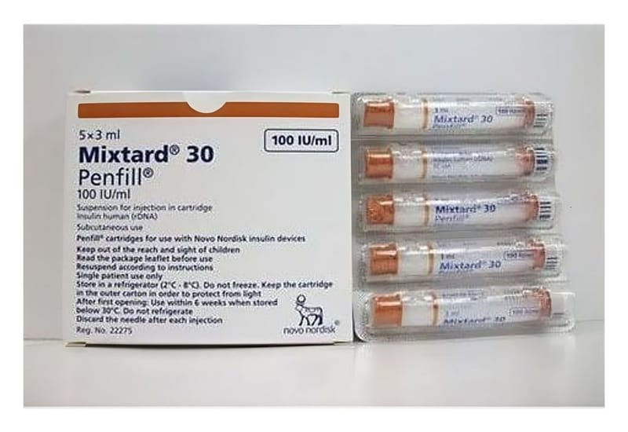

Mixtard 30 Hm Penfill 100 IU/ml Enjeksiyonluk Süspansiyon İçeren Kartuş, 5 Adet

Ne için kullanılır
KT · Bölüm 1MIXTARD®30 HM Penfill®, enjeksiyonluk süspansiyon içeren kartuş şeklinde bulunur. Bir kutuda 5 adet kartuş bulunur. Her bir kartuş 3 mL süspansiyon içermektedir. Enjeksiyonluk süspansiyon bulanık, beyaz, sulu bir süspansiyondur. Çalkalandıktan sonra sıvı eşit oranda beyaz ve bulanık görünmelidir.
MIXTARD®30 HM Penfill®, hızlı-etkili ve uzun-etkili insan insülini karışımıdır.
MIXTARD®30 HM Penfill®, diyabetli hastalarda yüksek kan şekeri seviyesini düşürmek için kullanılır. Şeker hastalığı (diyabet) vücudunuzun kan şekeri seviyesini kontrol etmek için
yeterli insülin üretmediği bir hastalıktır. MIXTARD®30 HM Penfill®ile tedavi diyabet komplikasyonlarından korunmanıza yardımcı olur.
MIXTARD®30 HM Penfill®, enjekte edildikten yaklaşık 30 dakika sonra kan şekerinizi düşürmeye başlar ve etkisi yaklaşık 24 saat sürer.